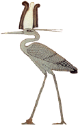

| Biography |
No creature symbolizes eternal life more than the phoenix, a mythical bird known as much for its beauty as its immortality. The legend of the phoenix appears in a variety of ancient mythologies, including Greek, Egyptian and Indian.It is usually depicted as an eagle or other bird of prey, but may also resemble a heron in its delicate majesty. In most mythologies, the phoenix is associated with the rising of the sun and has a close relationship with the sun-god Ra. Another feature of the phoenix is that only one can exist at a time. When it senses that its life is coming to an end - about once every thousand years - the phoenix builds itself a funeral pyre made of cinnamon or other aromatic material and allows itself to be consumed by the flames. Then, as the old phoenix is reduced to ashes, a new one rises to begin its life on Earth.
|  | ||
| Ancient Phoenix of Egypt | Classical Arabian Phoenix |